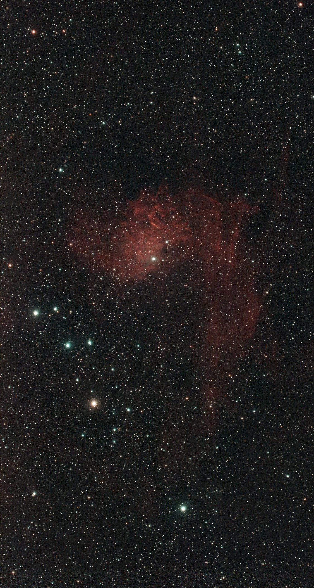
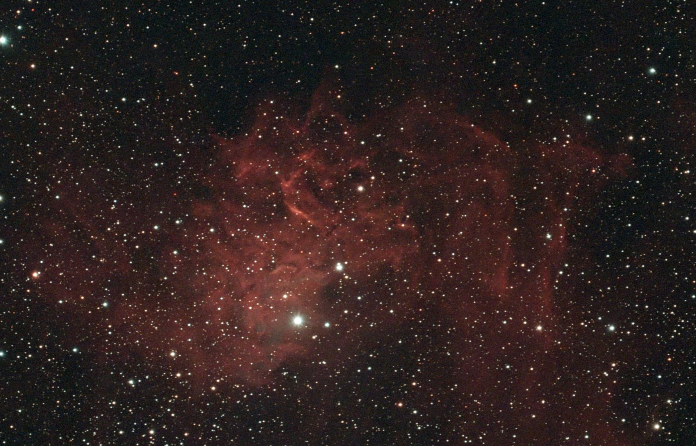
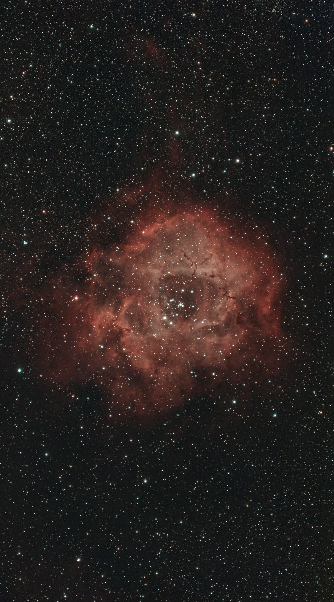
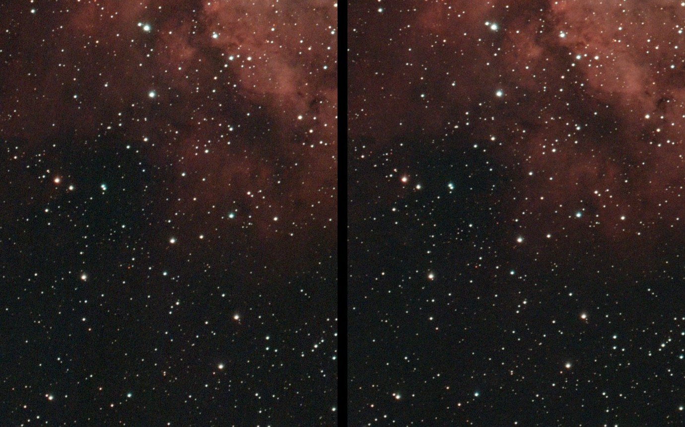
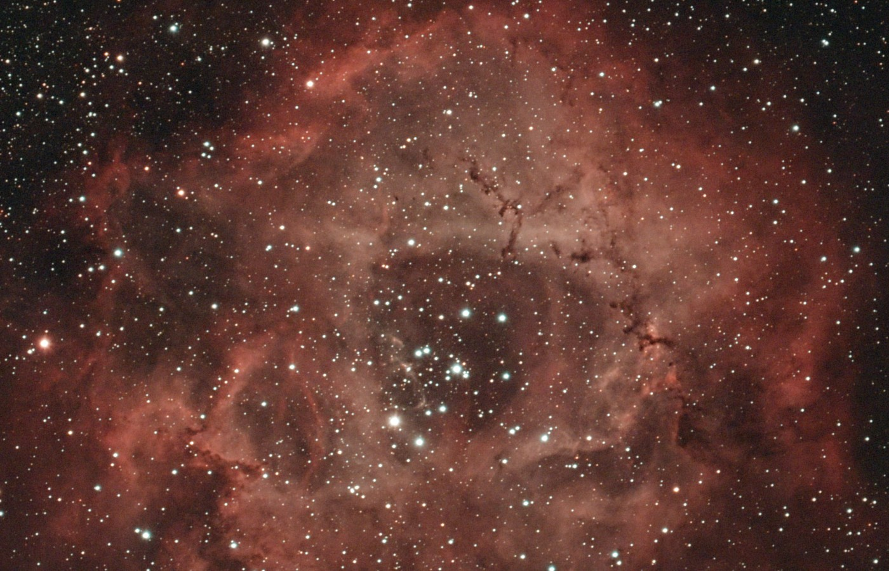

Night log · Saturday 17 October 2026
The Flaming Star Nebula, up close
The plan
The night after a perfect one, and the forecast was much less sure: high cloud all evening, clearing some time after midnight, with the three weather models disagreeing on exactly when. Two things were worth another go:
- The Flaming Star (IC 405) in Auriga, this time in a frame of its own. On Friday it shared the frame with the Tadpoles and ended up near the edge.
- A second night on the Rosette (NGC 2244), with the same framing, so the two nights could be stacked together. It's only clear of the house for about an hour and a half before dawn, so one night isn't enough.
- Captured
- 00:04–05:45
- Settings
- 20 s · gain 200 · dual-band
- Moon
- set before midnight
- Mount
- TH10 wedge, EQ
A gap in the cloud
By mid-evening the sky was overcast, the polar alignment wouldn't work, and the scope came back indoors. Then a gap opened just before half past eleven. Back out, and the app aligned at 23:39 with its best reading yet: 0.0° and 0.1°.
Claude ran the same drift check as Friday, but the cloud was still patchy and only a few frames plate-solved, so it was a rough check rather than a measurement. It showed nothing worse than Friday's 0.3°, which is plenty for 20-second frames. The night runner started at midnight.
The night
The cloud cleared as the models had hoped. Only two frames were thrown away for cloud, and the scope waited about 15 minutes while the Rosette passed behind the roofline. It refocused as the night cooled, took its darks at dawn and parked itself.
- Flaming Star
- 500 × 20 s · 2 h 47 min
- Rosette
- 180 × 20 s · 1 h
- Lost to cloud
- 2 frames
The Flaming Star Nebula (IC 405)
The Flaming Star is a cloud of hydrogen and dust about 1,500 light years away, lit by one star: AE Aurigae, the bright star in the lower part of the glow. It doesn't belong here. It was flung out of the Orion star-forming region about two and a half million years ago, probably in a close encounter between young stars, and it's now passing through this cloud at over 100 km/s. Its ultraviolet light makes the hydrogen glow red. Near the star, the faint bluish haze is dust reflecting its light.

With the whole frame to itself, the fainter outer parts show: long red streamers trailing down from the main cloud, which were off the edge on Friday. At full resolution the core breaks up into the twisted filaments that give the nebula its name.

The Rosette Nebula (NGC 2244), two nights stacked
The Rosette was framed exactly as on Friday, so the office computer could stack both nights together: 221 frames from Friday and 179 from Saturday, 400 in all. Each night was calibrated with its own darks, then every frame was lined up on the same stars and combined, with the cleaner frames counting for more, as with the two-night Veil.

Doubling the time doesn't make the picture twice as good: the noise falls by about the square root of the time, so twice the frames gives about 40% less noise. That's enough to show. The faint outer gas is smoother, and the edge of the nebula fades out more naturally instead of breaking into grain.


Next
The Rosette never gets above 43° from here, and for most of that it's behind the house. Some of the best winter targets are worse: the Orion Nebula peaks at 33° and the Horsehead at 36°, both due south, where the house blocks everything below about 45°. From the back garden they're clear for only about 40 minutes a night. So the next project is finding a spot with a clear view south. Not being able to see the pole from there doesn't matter much: the app's alignment looks overhead, and the drift check only needs the south and east.